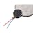
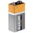

Things used in this project
Hardware components |
|

|
Seeed Studio XIAO ESP32S3 Sense |

|
Blues Notecard (Cellular) |
| Aaware Ultrasonic Sensors | |
|  | Brown Dog Gadgets Solar Cockroach Vibrating Disc Motor |
|  | 9V battery (generic) |
Story
-
Title:
Compact Obstacle Detection with GPS Navigation System Using XIAO ESP32S3 Sense and NOTECARD CELLULAR NBGL
-
Abstract
Independent navigation through urban areas is still a huge challenge for people with different kinds of mobility impairments because of various complex topography and lack of accessible means to navigate. We present a compact mobility aid system integrated with obstacle detection and GPS capability to offer real-time navigation assistance. The system, with an XIAO ESP32S3 Sense microcontroller performing the processing, along with a NOTECARD CELLULAR NBGL for GPS and cellular communication, provides dynamic obstacle feedback and precise navigation. It improves user independence and access, enabling a safer and more inclusive experience in urban centers. The mobility aid should be lightweight and portable to easily fit within existing mobility devices or act independently as an aid.
-
1. Introduction
1.1 Background
The challenges of navigating urban environments are numerous, including but not limited to obstacles, slopes, and general lack of good accessible navigation aids. Most of the existing solutions lack the incorporation of real-time obstacle detection and navigation guidance, which impacts the user autonomy and safety considerably.
1.2 Objectives
The main purpose of this project is to create a compact and efficient mobility aid system that integrates obstacle detection with GPS navigation. It also needs to provide real-time obstacle and useful intelligence through an urban environment to maximize the user's independence and safety in general.
-
2. System Components
2.1 XIAO ESP32S3 Sense
XIAO ESP32S3 Sense is such a type of general-purpose microcontroller, featuring low power and connectivity. The key feature list is provided below:
Processor: Dual-core processor with efficient multitasking
Memory: Sufficient RAM and Flash MEMORY to perform sensor reading and algorithm processing
Onboard Wi-Fi and Bluetooth
2.2 NOTECARD CELLULAR NBGL
This is a type of cellular module. The main functionality or feature set that attributes to such modules is done by on-GPS functionalities to provide accurate localization insight.
Cellular Connectivity: Provides uninterruptable communication and data transmission.
2.3 Obstacle Detection
The detection of obstacles in the system is done using ultrasonic or infrared sensors. Particular details are as follows:
Ultrasonic Sensors: The distance is measured by ultrasonic sensors through emitting sound waves and measuring the time it takes for the echo to reach back.
Infrared Sensors: Obstacles can be detected based on reflected infrared light.
2.4 Feedback Mechanism
The system offers several feedback mechanisms:
Auditory Feedback: Voice prompts or beeps to alert users regarding obstacles.
Haptic Feedback: Vibration alerts smooth
Visual Feedback: It shall be integrated into the App and shall display the navigation map amongst other options.
2.5 Power Supply
Battery: Lithium-ion rechargeable battery with enough capacity to use it continuously.
-
3. System Operation
3.1 Initialization
Power On: It shall start the operation of the entire device by using a power switch.
Establish the Connection: It shall establish connections with the GPS satellites and cellular networks.
3.2 Obstacle Detection
Sensor ON: Consistent scanning of obstacles
Data Processing: Computes the distance and triggers the mechanisms of feedback.
Obstacle Detection Feedback: Indicates immediate obstacles through instant alerts.
3.3 GPS Navigation
Location Tracking: Uses the NOTECARD CELLULAR NBGL for real-time GPS location data.
Route Guidance: Navigate through voice or a display.
Re-routing: Dynamic routes according to movement of user and obstacles that come in the way.
-
4. Development and Testing
4.1 Prototyping
Component Integration: allows assembly and connection of sensors, the microcontroller, and GPS module with each other
Software Development: the firmware to be written and checked for sensor data treatment and integration with GPS
4.2 Testing
Lab Testing: This should be done to verify the accuracy of obstacle detection and GPS functionality within controlled test environments.
Field Testing: It should also be tested in real-world urban environments to ascertain the performance and reliability.
User Feedback: General feedback should be acquired to identify areas of improvement from potential users or persons with mobility challenges.
4.3 Iteration
Further Development: The design should be refined according to the test results and feedback from the users.
Mass Production Scaling: Strategies put in place for mass production and deployment.
-
5. Problems and Solutions
5.1 Obstacle Detection
Problem: Detection of all kinds of obstacles accurately.
Solution: Advanced sensor data processing algorithms will be implemented and integration of multiple sensor types.
5.2 GPS Accuracy
Problem: Reliable GPS tracking is difficult in urban environments as signal interference may easily happen.
Solution: High-precision GPS modules and integrated signals boosting techniques.
5.3 Battery Life
Problem: Power consumption vs. the function of a device.
Solution: Optimizing code for low power consumption and applying high-capacity batteries, as well as appropriate hardware.
-
6. Explanation of the Code and Improvements
6.1 Overview of the Code
The attached Arduino code marries GPS and obstacle-sensing functionalities on the XIAO ESP32S3 Sense and NOTECARD CELLULAR NBGL devices. Important functionalities under the code include:
Initialization of Sensors: In this part of the code, pins are configured for ultrasonic sensors plus pins for feedback mechanisms.
Obstacle detection logic: Measures distances and triggers feedback mechanisms based on proximity.
Handling of GPS Data: This part invokes and processes GPS data from the NOTECARD CELLULAR NBGL.
6.2 Improvements on the Code Given
Error Checking: Do intensive error checking while retrieving GPS information or sensor readings.
Power Management: The design should also provide options for different power-saving modes in order to extend the battery life of the device. Feedback Customization: The user should be allowed to configure the feedback options through the mobile application or a settings interface. -
7. Future Work and Applications 7.1 Future Work Advanced Sensor Integration: Further integration of other sensors to explicitly detect obstacles can be made. Machine Learning: Obstacle detection using machine learning algorithms and further guidance of these using the algorithms is possible. 7.2 Applications Mobility Devices: Integration with wheelchairs, walkers, and other mobility aids.
Urban Navigation: Use this to allow sophisticated urban navigation with mapping apps.
-
8. Conclusion
This compact mobility aid system using the XIAO ESP32S3 Sense and NOTECARD CELLULAR NBGL is a revolutionary improvement in assistive technology. Bringing together both obstacle detection and GPS navigation, the system hosts the potential to enable people who face mobility impairment a harmonious blend of user autonomy and safety in an urban setting.
References
Datasheets: XIAO ESP32S3 Sense, NOTECARD CELLULAR NBGL.
Documentation: Arduino IDE, Notecard API documentation, etc.
Literature: A few related research papers concerning assistive technology and mobility aids.
Appendix
A. Circuit Diagram
Diagram: A detailed circuit diagram showing the connections between the components.
B. Software Installation
Instructions: Step-by-step installation and uploading of code in Arduino IDE.
C. User Manual
Instructions: The specific steps that a user would go through in operating the mobility aid system.
C++ Syntax: -
The code has typical C++ syntax; that is, it includes libraries with #include <Library>, Arduino sketches use the functions void setup() and void loop(), and Serial.begin(115200) to start serial communication.
Arduino Platform: Code written on the Arduino platform is more or less C++; however, C++ in Arduino is a watered-down version that embedded system programmers use to interface with a microcontroller.
Below is a simple explanation of the C++ features used in the code:
Preprocessor Directives: #include <Wire.h> and #include <Adafruit_Sensor.h> are used to include the necessary libraries. Variables and Data Type: Variable usage includes int, long, const. Control Structures: Using control structures if and else for decision making. Functions: Specific functions defined in the Arduino framework are used such as setup() and loop(), but those are written in C++.